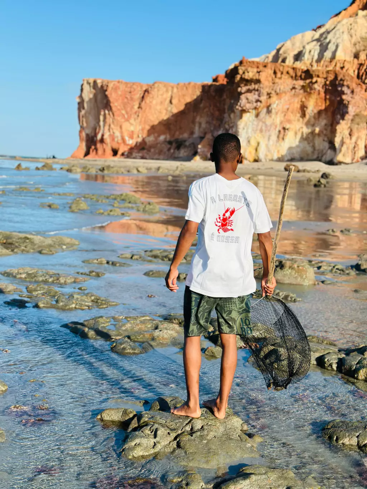
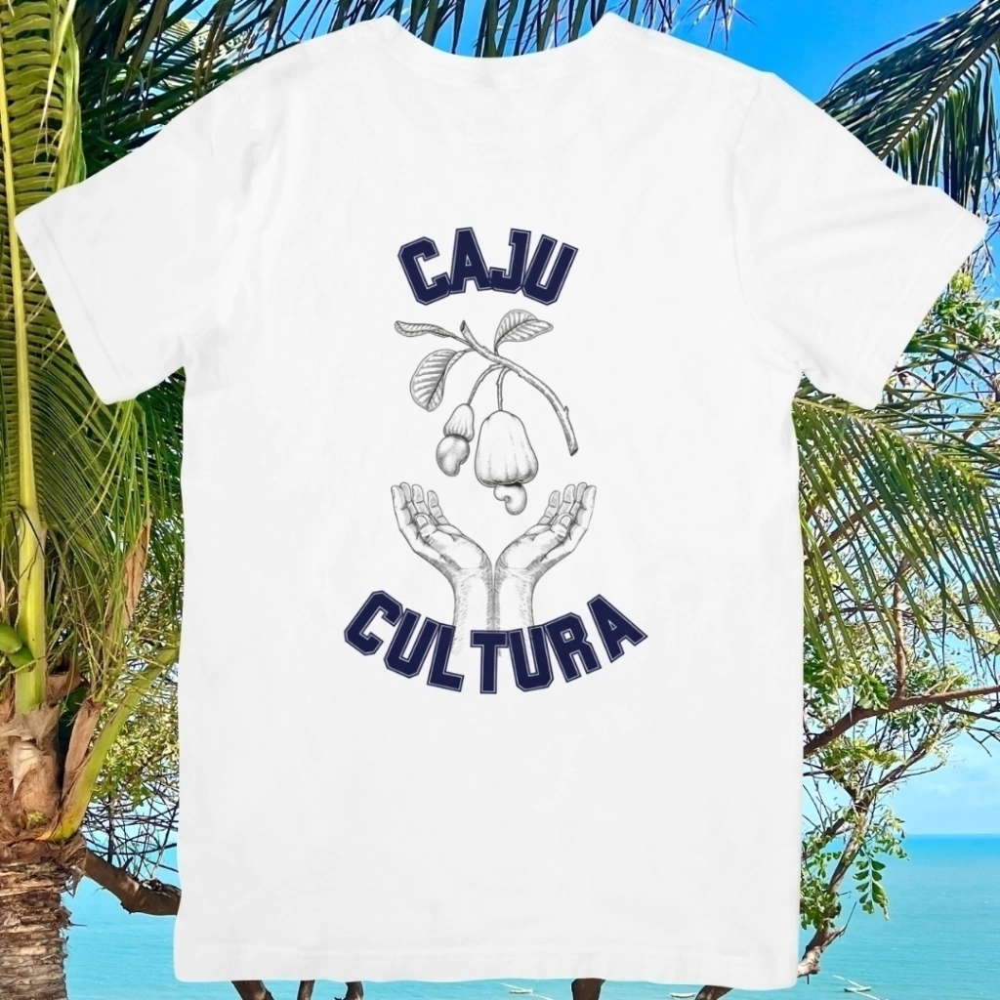
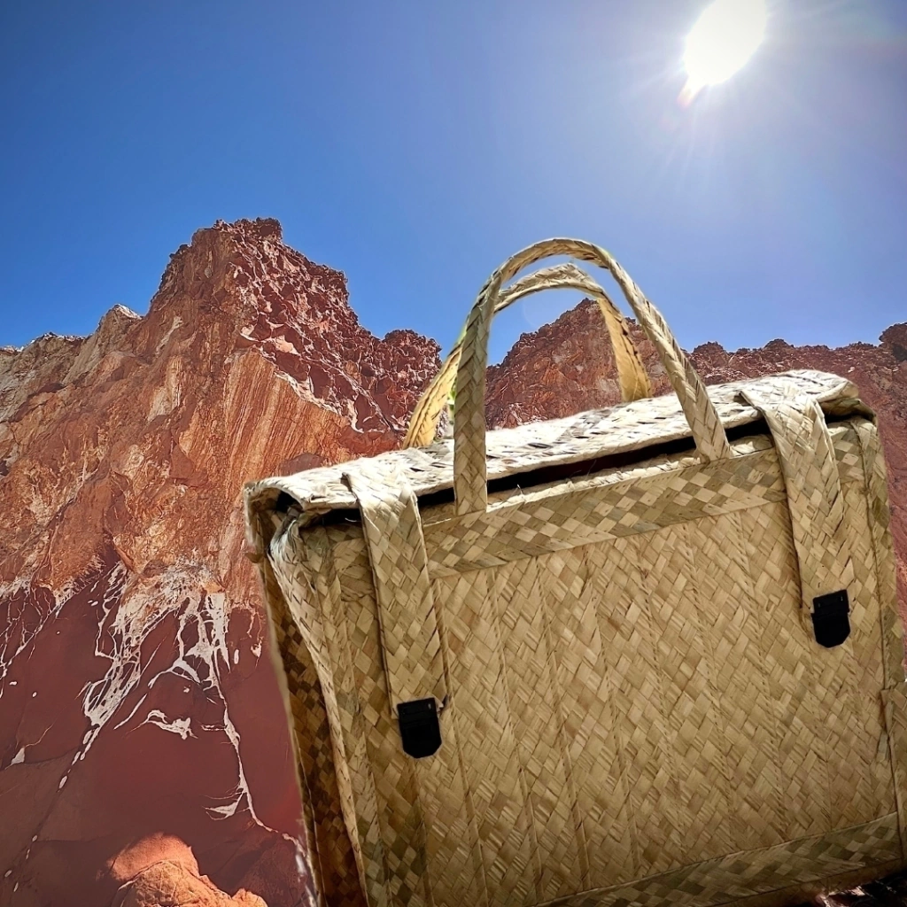

Paz, tranquilidade e aconchego à beira-mar
Desconecte da correria do dia a dia e sinta a brisa suave do litoral leste cearense. Suítes arejadas com varanda e rede, café da manhã artesanal e o pôr do sol inesquecível entre as falésias de Icapuí.


Onde o tempo desacelera e a natureza acolhe
"Na Vila Matury, acreditamos que luxo verdadeiro é acordar sem despertador, caminhar descalço na areia macia e adormecer ao som tranquilo das ondas."
Localizada na pitoresca Praia da Redonda, em Icapuí - Ceará, nossa pousada nasceu do desejo de preservar a autenticidade das vilas de pescadores aliada ao conforto de uma hospedagem intimista.
Aqui você encontra arquitetura acolhedora, jardins sombreados por coqueiros nativos, redes que convidam ao descanso e a calorosa hospitalidade cearense que faz cada visitante se sentir em casa.
- Pé na areia: a poucos passos das águas mornas da Praia da Redonda
- Café da manhã regional farto incluso, com tapiocas quentinhas e frutas frescas
- Varandas privativas com redes de descanso em todas as acomodações
- Silêncio, privacidade e integração harmoniosa com a natureza
Nossas Acomodações
Projetadas com elementos naturais, ventilação agradável e enxoval aconchegante para garantir noites de sono profundo e renovador.
Guia de Icapuí & Redonda
Falésias esculpidas pelo vento, dunas douradas, passeios de jangada e a famosa Rota da Lagosta. Descubra os tesouros ao redor da pousada.
Cardápio & Experiência Gastronômica
A autêntica culinária litorânea cearense. Lagostas frescas pescadas na Praia da Redonda, petiscos crocantes para saborear pé na areia e caipirinhas tropicais.
Lojinha & Boutique da Vila
"Pousada Vila Matury estendida: para ver, usar e provar a Vila onde quer que você esteja."
Peças exclusivas e afetivas criadas para celebrar as falésias, a brisa e as memórias da Praia da Redonda.

História Real • 1963Camiseta "A Lagosta é Nossa"
Peça off-white em malha premium. A estampa exclusiva reproduz uma arte feita à mão em 1963 celebrando o fim da famosa "Guerra da Lagosta" entre o Brasil e a França em defesa das águas cearenses.

14% OFFCamiseta Cajucultura
Camiseta off-white em puro algodão homenageando os cajueiros e a tradição dos povos de Icapuí. Parte do valor de cada peça é revertida para ações socioambientais locais.

Artesanal • Palha PuraBolsão Palha de Carnaúba
Modelagem especial ampla e tamanho único. Produzido manualmente por artesãos do litoral leste cearense com palha de carnaúba sustentável. O clássico indispensável para a praia.
O que dizem os nossos hóspedes
Relatos de quem escolheu a Vila Matury para recarregar as energias e viver dias inesquecíveis na Praia da Redonda.
"Um verdadeiro paraíso de paz. A pousada tem uma vibe aconchegante deliciosa e a equipe nos tratou como se fôssemos da família. Dormir ouvindo o som do mar não tem preço. Voltaremos com certeza!"
"O café da manhã é um espetáculo à parte! Tapiocas feitas na hora com recheio caprichado, bolos caseiros quentinhos e suco de caju fresco. A lagosta servida no almoço foi a melhor que já comi em Icapuí."
"Estávamos precisando fugir da loucura da cidade. A Vila Matury entregou exatamente o que prometeu: silêncio, rede na varanda com brisa constante e uma vista deslumbrante das falésias. Saímos renovados!"
Como Chegar à Vila Matury
Localizada no litoral leste do Ceará, com fácil acesso pavimentado e estradas cênicas.
Rua Serra de Redonda, 1316 - Praia de Redonda
Icapuí - CE, CEP 62810-000
🚗 Vindo de Fortaleza (aprox. 200 km):
Siga pela CE-040 até a entrada de Icapuí. O trajeto é totalmente asfaltado, bem sinalizado e margeado por paisagens litorâneas encantadoras.
🚗 Vindo de Mossoró ou Natal / RN:
Acesso rápido pela BR-304 e CE-261. Icapuí fica a apenas 65 km de Mossoró, tornando a pousada perfeita para refúgios de final de semana.
Perguntas Frequentes
Informações claras sobre horários, comodidades e políticas de reserva.
Nosso check-in inicia às 14h00 e o check-out é realizado até as 12h00. Caso necessite de early check-in ou late check-out, entre em contato prévio pelo WhatsApp para checar a disponibilidade com a nossa recepção.
Sim! Um dos pontos altos da Vila Matury é o nosso café da manhã regional artesanal incluso para todos os hóspedes, servido diariamente das 7h30 às 10h com tapiocas na chapa, frutas frescas, bolos caseiros e queijo coalho.
Sim. Oferecemos estacionamento privativo gratuito para os nossos hóspedes e rede Wi-Fi via fibra óptica de alta velocidade cobrindo todas as suítes e áreas comuns da pousada.
Adoramos pets de pequeno porte! Para garantir o conforto de todos os hóspedes, solicitamos apenas aviso prévio no momento da reserva para acomodá-los nos chalés com deck privativo mais adequados.
As reservas diretas são confirmadas via WhatsApp com pagamento facilitado via PIX (com desconto especial) ou cartão de crédito parcelado, sem as taxas e comissões extras de plataformas intermediárias.
Pronto para viver dias de descanso inesquecíveis em Icapuí?
Garanta o melhor valor e atendimento acolhedor reservando diretamente pelo nosso WhatsApp oficial.